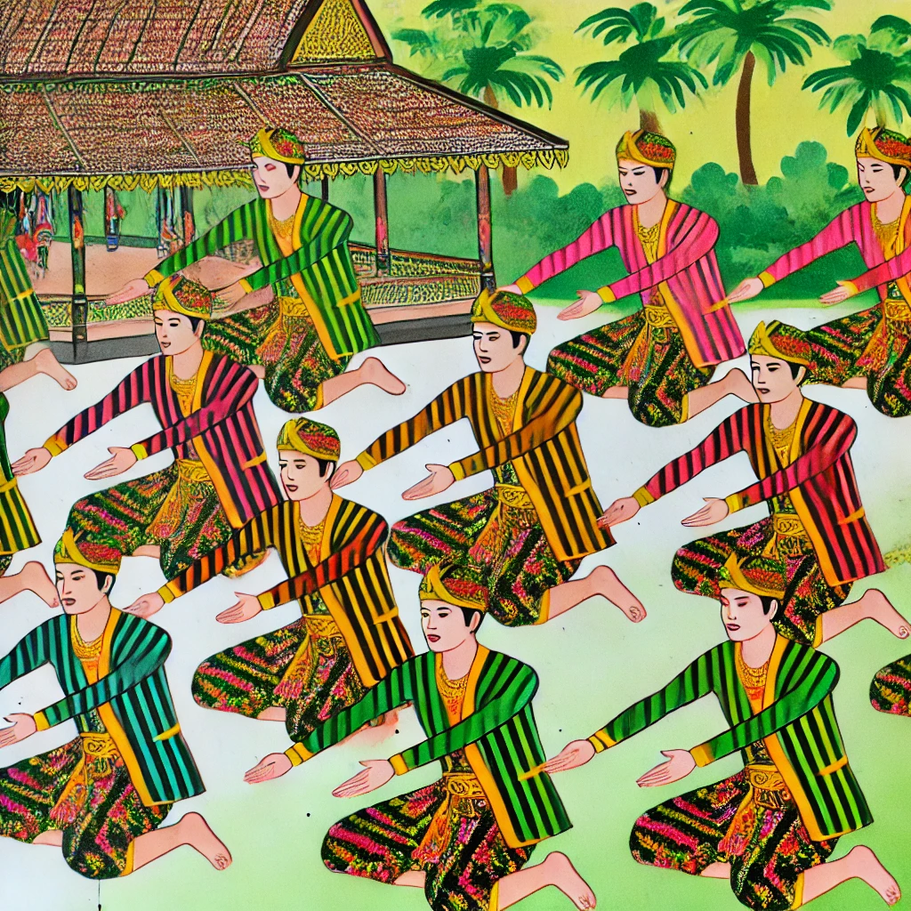

Kebudayaan Indonesia
Tarian Tradisional
-
Tari Kecak (Bali)
Tarian yang dilakukan oleh puluhan pria yang duduk melingkar sambil meneriakkan "cak" secara berirama. Menceritakan kisah Ramayana tanpa alat musik, hanya suara manusia. Sering ditampilkan dalam upacara keagamaan dan festival budaya. -

Tari Saman (Aceh)
Tarian yang melibatkan gerakan tangan dan tubuh yang cepat dan serempak. Dikenal sebagai "Tarian Seribu Tangan". Ditampilkan pada acara-acara adat, keagamaan, dan penyambutan tamu. -
Tari Reog (Ponorogo, Jawa Timur)
Tarian dengan topeng besar yang beratnya bisa mencapai 50 kg. Menggambarkan cerita mitos tentang Singo Barong. Sering ditampilkan pada upacara adat dan perayaan kemerdekaan.
Upacara dan Tradisi
-
Upacara Ngaben (Bali)
Upacara kremasi umat Hindu di Bali yang menggunakan kereta kayu besar untuk membawa jenazah. Upacara ini memiliki makna melepaskan roh dari dunia fana menuju alam roh. -
Sekaten (Yogyakarta)
Upacara perayaan Maulid Nabi Muhammad SAW yang menampilkan gamelan Sekaten dan pasar malam. Memperingati kelahiran Nabi Muhammad dan penyebaran Islam di Jawa. -
Upacara Rambu Solo (Toraja, Sulawesi Selatan)
Upacara pemakaman adat suku Toraja yang sangat kompleks dan bisa berlangsung berhari-hari. Mengantar arwah menuju Puya (dunia roh) dengan baik.
Tempat Wisata Terbaik di Indonesia
-
Bali
Dikenal dengan pantai yang indah, budaya yang kaya, dan kehidupan malam yang meriah. Tempat populer di Bali antara lain Ubud, Kuta, Seminyak, dan Nusa Penida. -
Raja Ampat (Papua Barat)
Keanekaragaman hayati laut yang luar biasa, surga bagi penyelam. Menawarkan pemandangan bawah laut yang menakjubkan dengan terumbu karang yang indah. -
 Yogyakarta
Yogyakarta
Kota budaya dengan banyak candi bersejarah seperti Borobudur dan Prambanan. Menawarkan pengalaman budaya yang kaya dengan keraton dan berbagai seni tradisional. -
Lombok
Dikenal dengan pantai-pantai yang menakjubkan dan Gunung Rinjani. Tempat yang lebih tenang dibanding Bali, dengan keindahan alam yang luar biasa. -
Komodo Island
Tempat tinggal Komodo, reptil terbesar di dunia. Menawarkan trekking dan snorkeling dengan pemandangan alam yang memukau.
Daftar Hotel Favorit
-
The Mulia, Bali
Alamat: Jl. Raya Nusa Dua Selatan, Bali
Fasilitas: Kolam renang, spa, restoran, bar, Wi-Fi gratis
Harga: Mulai dari Rp 2.500.000 per malam -
Raffles Jakarta
Alamat: Ciputra World 1, Jl. Prof. Dr. Satrio, Jakarta
Fasilitas: Kolam renang, pusat kebugaran, spa, restoran, Wi-Fi gratis
Harga: Mulai dari Rp 3.000.000 per malam -
Plataran Komodo Resort & Spa
Alamat: Waecicu Beach, Labuan Bajo, Flores
Fasilitas: Kolam renang, spa, restoran, bar, layanan antar-jemput bandara
Harga: Mulai dari Rp 4.500.000 per malam -
Hotel Tugu Lombok
Alamat: Sire Beach, Lombok
Fasilitas: Kolam renang, spa, restoran, bar, Wi-Fi gratis
Harga: Mulai dari Rp 3.500.000 per malam -
Ayana Resort and Spa, Bali
Alamat: Jl. Karang Mas Sejahtera, Jimbaran, Bali
Fasilitas: Kolam renang, spa, restoran, bar, Wi-Fi gratis
Harga: Mulai dari Rp 4.000.000 per malam